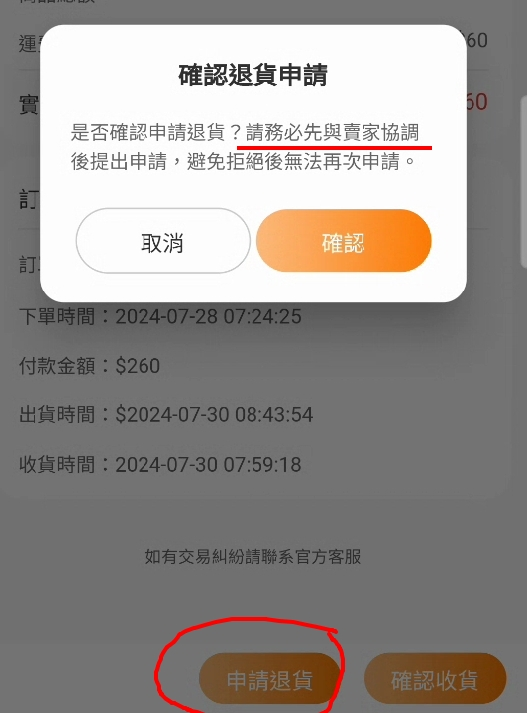

退換貨政策
為確保雙方權益，所有交易買方賣方都應該保存開箱封箱影片，可做為直接判定的證明使用！
本平台交易與退換貨流程如下：
- 買家下單後賣家確認前雙方都可以無條件取消訂單
- 賣家確認訂單後若需取消訂單則需經過雙方協調後同意，賣家有權拒絕取消訂單。
- 若買家下單後賣家未於72小時內確認訂單，買家有權無條件取消訂單。
- 若買家付款後，賣家未於7天內出貨且無法聯繫上賣家，買家有權無條件取消訂單。
- 未發售之商品不適用第4條規則，但仍需於發售日當天起14天內出貨，否則買家有權無條件取消訂單；若碰上不可抗力之特殊情況，賣家有權向平台申請延長出貨時間。
退貨相關政策如下：
買家於消保法鑑賞期內(不含消保法例外排除之賣家類型、特殊商品)，如發生以下情況，雙方協調溝通後賣家同意前提下，可在iCard平台申請退貨（買家送出如圖1）。
請留意退貨只能申請一次！若賣家拒絕後申請退貨請在雙方皆同意的情況下透過平台客服回報
- 商品缺件(須提供開箱錄影佐證)
- 錯誤商品(賣家寄錯商品，稀有度、卡號不正確、不同商品等。須提供開箱錄影佐證）
- 商品毀損(須提供開箱錄影佐證)
- 全新品已拆封或商品無法使用(須提供開箱錄影佐證)
- 疑似仿冒品(須提供開箱錄影，並提供商品為仿冒品的證據)
- 實品賣家提供圖片（若有需要請購買前請賣家提供完整圖片）有落差(須提供開箱錄影佐證)
※7日鑑賞期間內非以上狀況想申請退款退貨，請先與賣家確認處理方式，取得賣家同意，後續在做相關申請。
若買家於退貨申請後賣家遲遲未回覆（超過7天），且經iCard通知仍聯繫不上：
- 該筆交易由平台方裁定處理方式，若該交易並非賣家之個人瑕疵，買家申訴後遲遲（超過7天）未再主動提供或更新相關資訊或新的證明。iCard可能判定拒絕退貨並撥款給賣家。
- 該筆交易為賣家之瑕疵(如寄送包裝正常但商品有損、寄出非買家購買的商品、商品外觀新舊與用戶購買的商品不符合、仿冒品等等…) 如該筆款項尚未撥款給賣家，iCard將凍結該筆款項，待收到相關公證單位公文或進一步證明後，iCard將配合相關款項歸屬決議或公證單位公文內容進行處理。
特殊狀況處理：
若有以下特殊狀況本平台將盡可能提供相關協助，若有需配合的地方本平台也會盡可能配合
- 詐騙：無論賣方買方詐騙，請先報警尋求協助，平台會盡可能提供相關幫助，若後續有相關單位公文平台在不違反用戶隱私的前提下盡可能提供協助。
- 仿冒品：請提供相關證明並先走退貨流程，若雙方無共識請先與消基會檢舉，若後續有相關單位公文平台在不違反用戶隱私的前提下盡可能提供協助。
若有其他特殊狀況請務必先保存開箱影片並與iCard客服中心聯繫，我們會儘快協助您處理後續！
圖1

iCard感謝您的使用